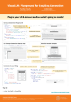

VisuaLLM: Easy Web-Based Visualization for Neural Language Generation
František Trebuňa, Ondřej Dušek
In Sessions:
GenChal Poster Session + demos, Simon Mille: (Thursday, 17:35 CEST, Foyer , Chat on Discord )
Poster

Abstract:
VisuaLLM is a Python library that enables interactive visualization of common tasks in natural language generation with pretrained language models (using HuggingFace's model API), with tight integration of benchmark datasets and fine-grained generation control. The system runs as a local generation backend server and features a web-based frontend, allowing simple interface configuration by minimal Python code. The currently implemented views include data visualization, next-token prediction with probability distributions, and decoding parameter control, with simple extension to additional tasks.